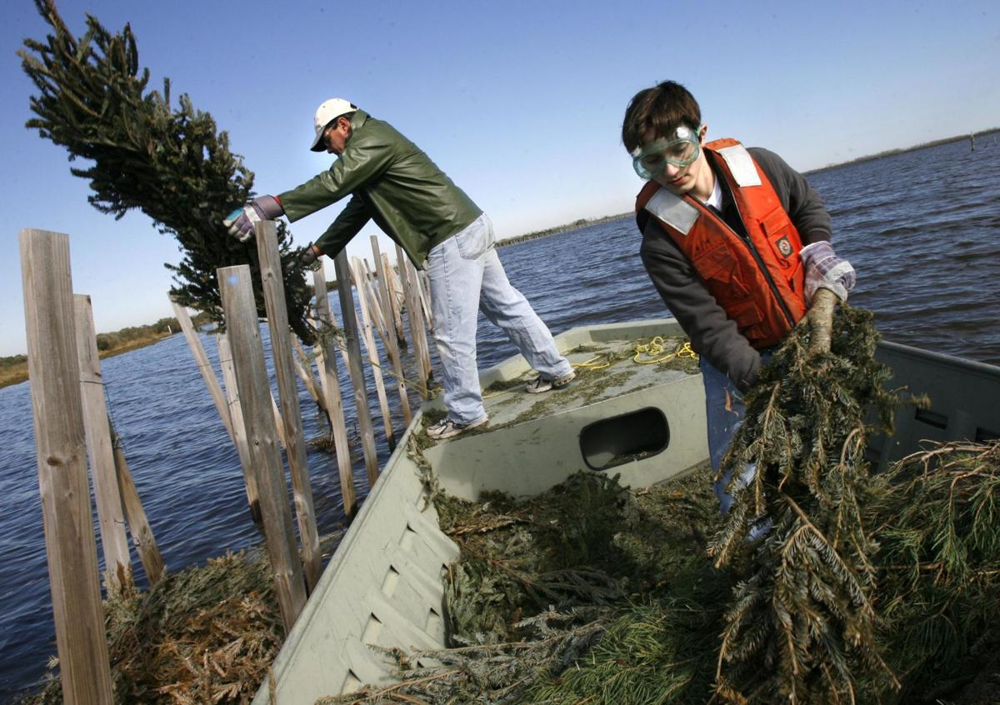

Background Information
Louisiana Does Not Look Like You May Think...
Southeast Louisiana is often depicted as a solid landmass on maps. This is somewhat unrealistic though - the following maps compare what Louisiana is depicted as vs. what maps would look like if they showed only solid land. The light blue indicates swamps, marshes, and wetlands. Click and slide the blue slider to compare two maps:
The Louisiana coast is eroding at an alarmingly fast rate, causing numerous consequences for the entire state. The loss of land destroys entire ecosystems that support fishing and migratory species are being destroyed, as well as leaves inland regions of Louisiana vulnerable to the damaging effects of storm surges such as flooding. With the addition of levees and degradation by oil companies through Louisiana’s waterways, the natural sediment that would once replenish barrier islands, marshlands, and swamps no longer cycle back to restore the land that washes away earlier in the year.
Vegetation and trees help to minimize the impact of the tides on marshes and coastal land. Specifically, trees help protect the coast in multiple ways: they absorb water, act as shields for the barrage of the tide, and eventually decompose into sediment that replaces lost land. Unfortunately with the loss of land, saltwater flows further inland killing off non-salt water plants in its path. This further narrows down the types of trees and vegetation that can be planted in an effort to restore land lost to erosion.
Choosing a species of tree for our planting algorithm was difficult because it had to possess a strong enough root system to help prevent erosion as well as be able to survive in Louisiana wetland or coastal conditions. At first, the Black Mangrove seemed like an ideal candidate because it can survive in water with a high salinity content, but the winter climate in Louisiana is too cold for it to survive. We came up with two different approaches: old Christmas trees for coastal areas with high salinity content, and bald cypress trees for wetland areas with a low salinity content. Old Christmas trees can be used to build wave-dampening fences or barriers that help reduce coastal erosion, and our algorithm can determine the optimal placement for these trees. Bald cypresses have a strong, lateral root system that helps prevent sediment from being washed away, grow well in the Louisiana climate in low salinity water, and can live with their root system partially submerged in water, making them a great candidate to be planted in wetland areas.
The current method for using Christmas trees to help prevent coastal erosion is to make large barriers or fences in Bayous, specifically in places where freshwater containing sediment and tidal ocean water meet. For cypress tree planting, which typically occurs in freshwater wetlands (salinity ppt under 10), the present procedure is to plant trees 14 feet apart and slightly stagger them by a foot or two so they are not in an exact line.